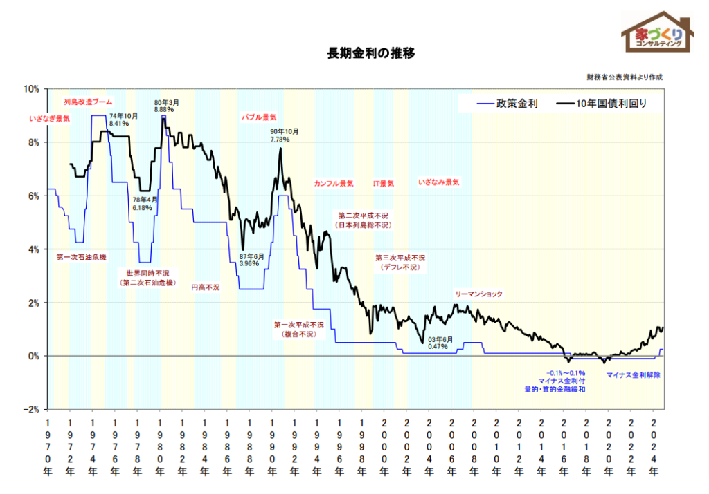
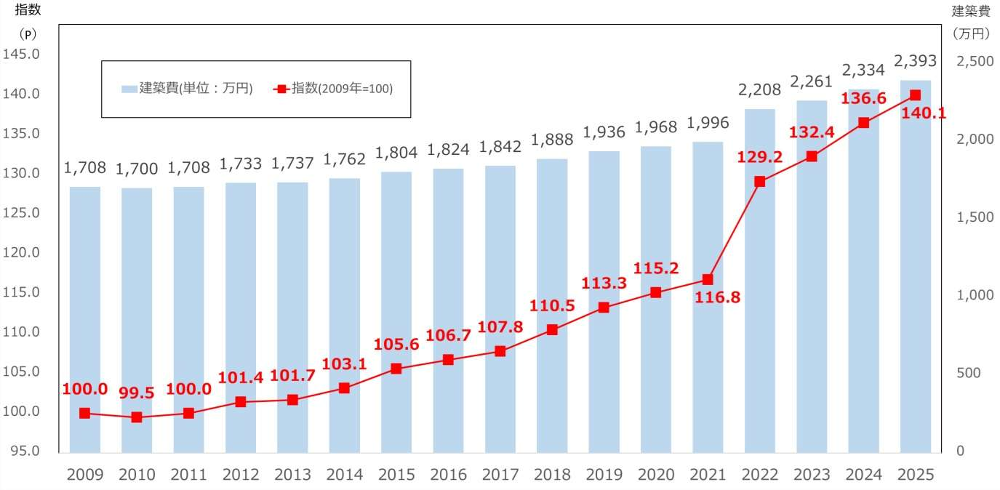
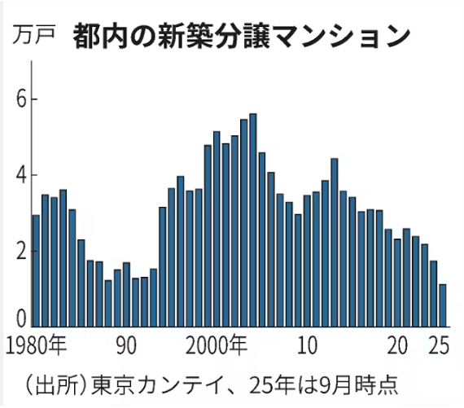
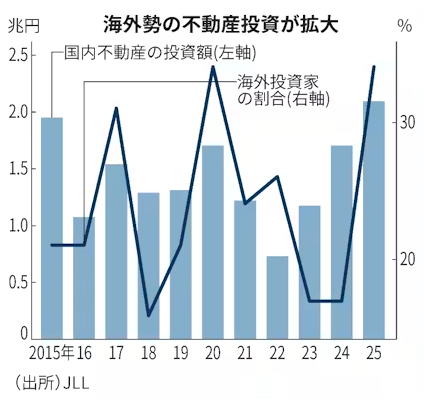
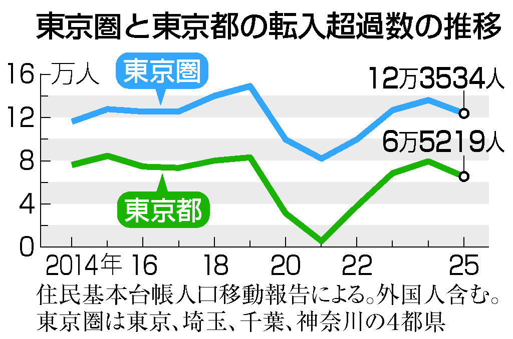

「なんとなく高い」を、数字とメカニズムで説明できるようになる30分
家の値段は、金利・建築費・供給・海外マネー・人の集中という具体的な力で動いている。
家は基本ローンで買う。金利が低い＝同じ給料でも借りられる額が大きい＝高い家に手が届く。

建てるコスト自体が上がっている。円安で輸入資材（鉄・木材）が高く、エネルギー高、職人の人手不足（2024・2025年問題）。

新築の供給は減り続けている。新築が高くて出てこないと、人は中古へ流れ、中古も値上がりする。

円安で、海外の投資家から見ると日本の不動産は「セール中」。割安なので世界の資金が入ってくる。

人口は都心に集まり続け、共働きで世帯年収の高い世帯（パワーカップル）が高額物件を買える。

5つの力の一部が逆回転すると、市場は変わる。
全体が値上がり＝古い家・訳ありの家でも、土地の価値に底上げが効きやすい。「ボロいから二束三文」とは限らない時代。
値段が高い＝売りたい人には「今が高く売れるチャンス」。相続した実家や空き家を手放したい動機が生まれる。それが問い合わせの背景。